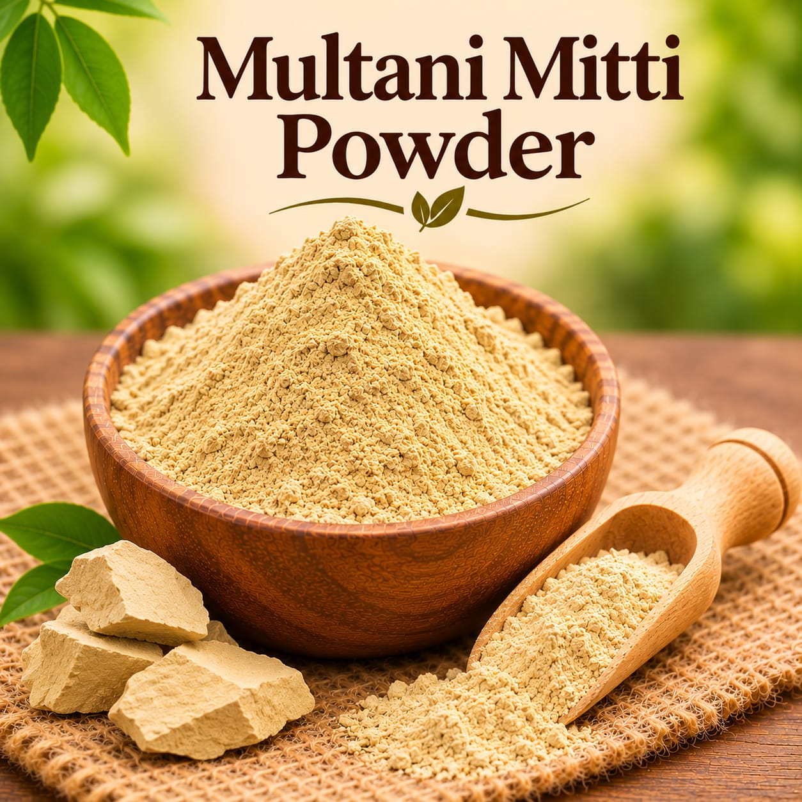
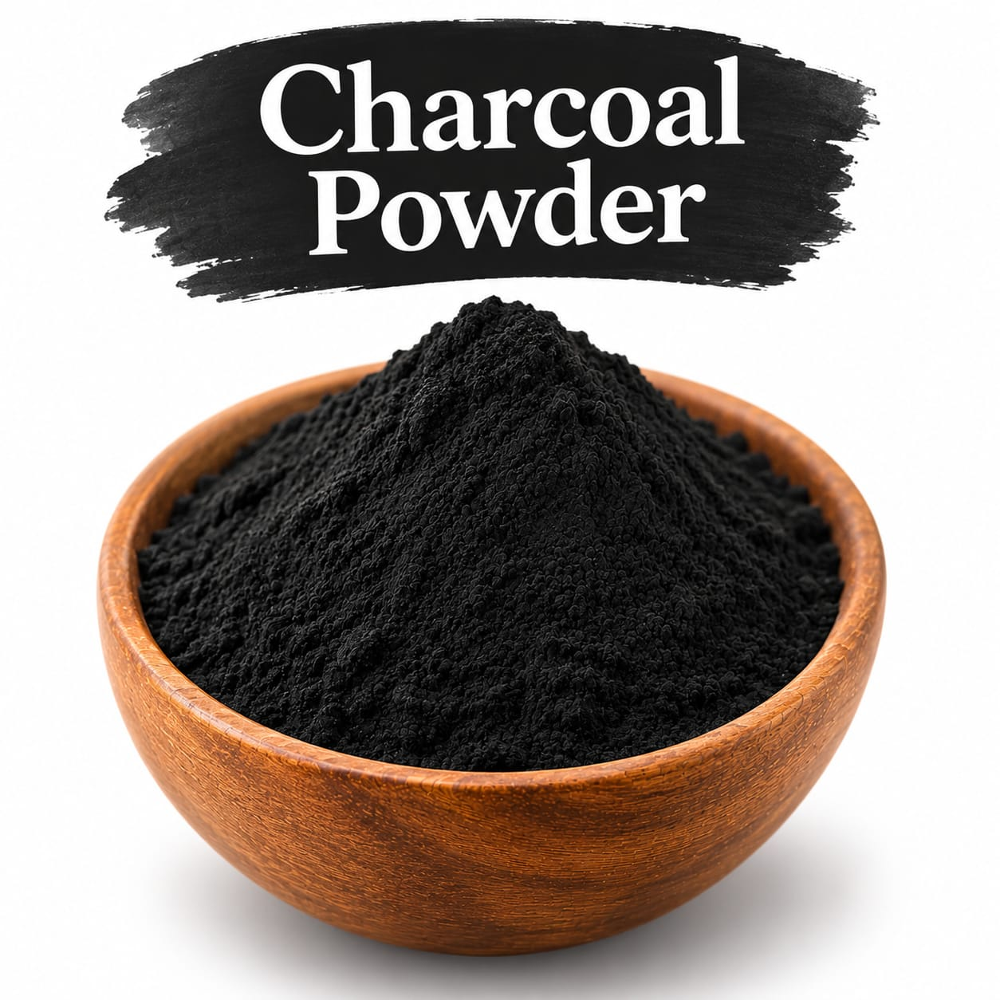
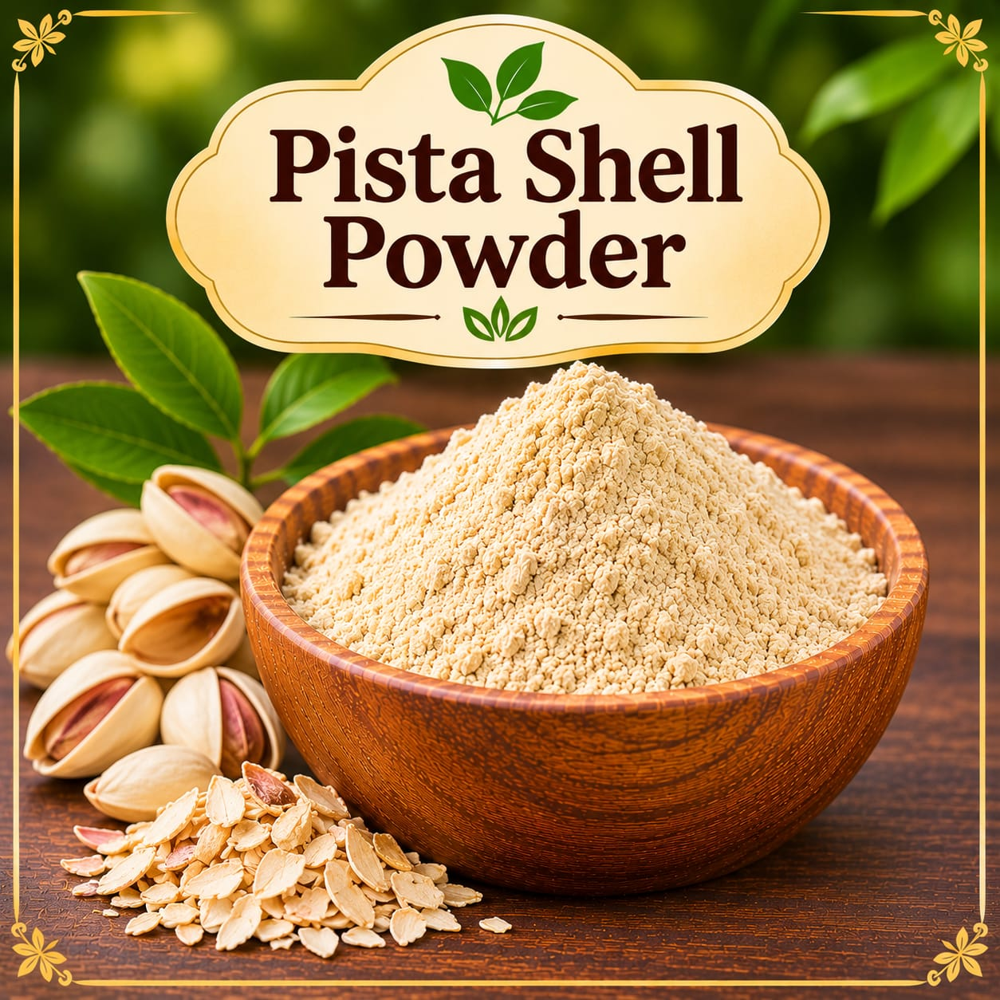

Clay
Multani Mitti Powder
A finely powdered earth ingredient, also known as fuller’s earth.
Ask for current priceAsk
Browse clay and textured ingredients in the Sahaj Organics collection. Compare the available forms below and ask us about current stock, price, and product details.
Browse clays and exfoliantsIngredient particle size and properties can affect the texture and appearance of a finished formula. Test a small batch and confirm suitable usage for your recipe.

A finely powdered earth ingredient, also known as fuller’s earth.

A dark powdered ingredient for creative soapmaking and handmade formulations.

Ground pistachio shell for a textured addition to creative formulations.
Ask us for current product specifications and confirm that an ingredient is suitable for your intended formulation.
Want to know more about a clay or exfoliant? Contact Sahaj Organics to ask about current prices and availability.